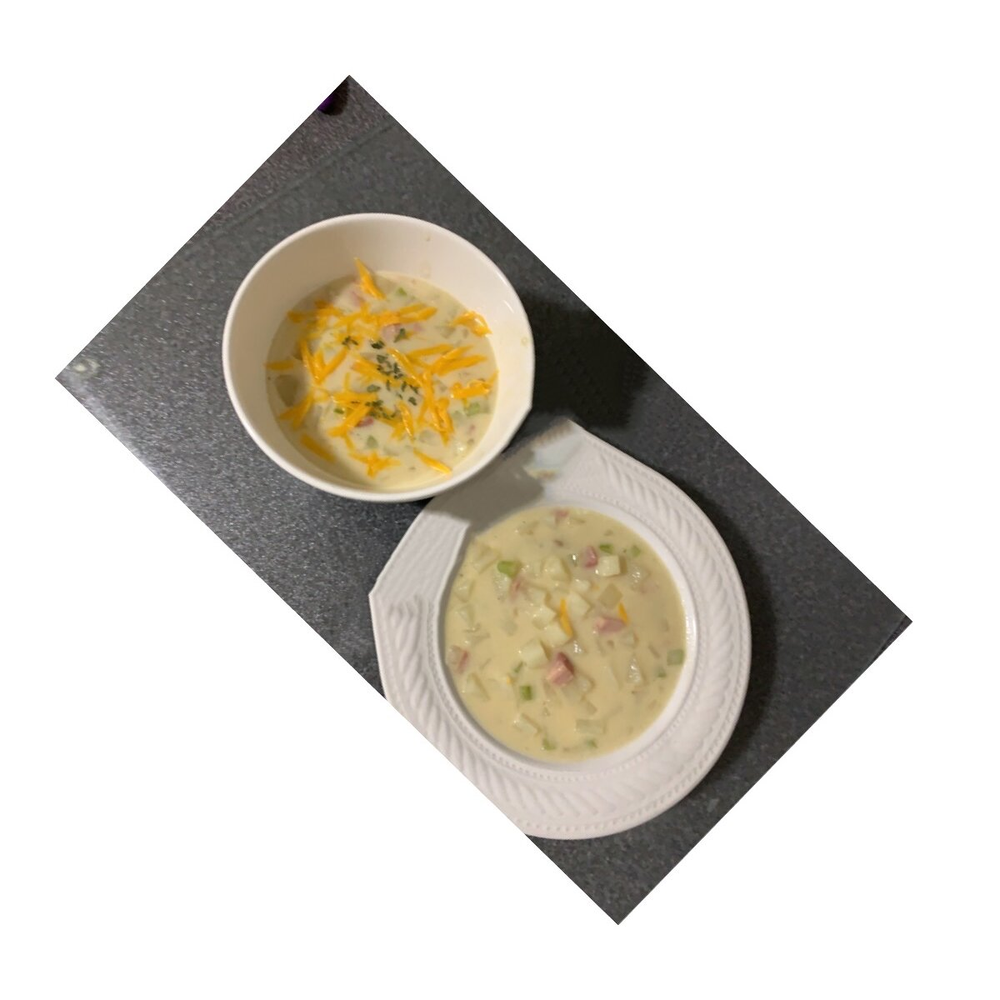

Potato Soup

Delicious Ham and Potato Soup
This is a delicious recipe for ham and potato soup
that a friend gave to me. It is very easy and the
great thing about it is that you can add additional
ingredients, more ham, potatoes, etc and it still
turns out great.
Ingredients
- 3 1/2 cups of peeled and diced potatoes
- 1/3 cup of diced celery
- 1/3 cup finely chopped onion
- 3/4 cup diced cooked ham
- 3 1/4 cups of water
- 2 tbs chicken bouillon granules
- 1/2 tsp salt, or to taste
- 1 teaspoon ground pepper, or to taste
- 5 tablespoons butter
- 5 tablespoons all-purpose flour
- 2 cups milk
Steps
- Combine the potatoes, celery, onion, ham and
water in a stockpot. Bring to a boil, then cook
over medium heat until potatoes are tender, about
10 to 15 minutes. Stir in the chicken bouillon,
salt and pepper.
- n a separate saucepan, melt butter over
medium-low heat. Whisk in flour with a fork,
and cook, stirring constantly until thick, about
1 minute. Slowly stir in milk as not to allow
lumps to form until all of the milk has been
added. Continue stirring over medium-low heat
until thick, 4 to 5 minutes.
- Stir the milk mixture into the stockpot,
and cook soup until heated through. Serve immediately.